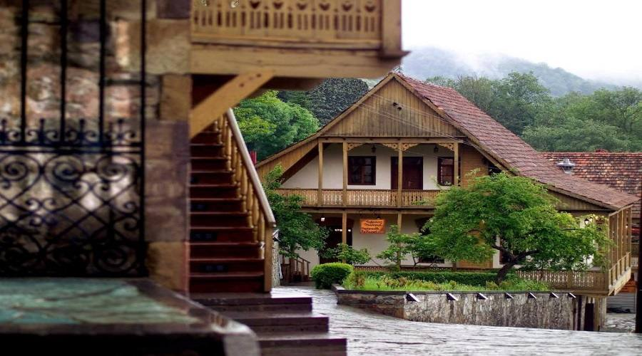
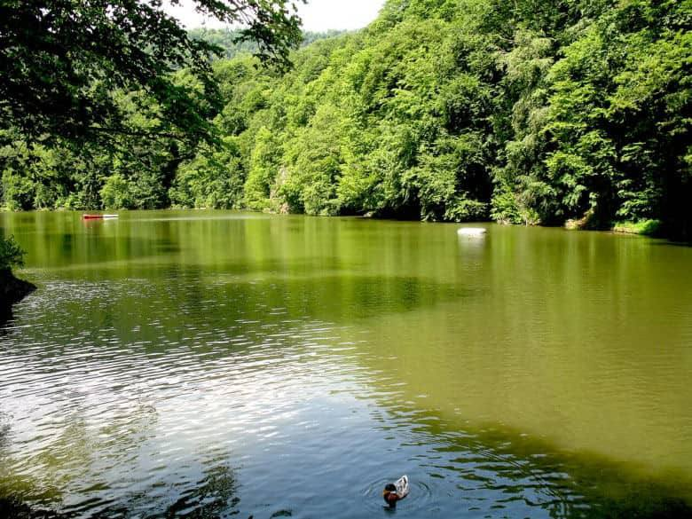
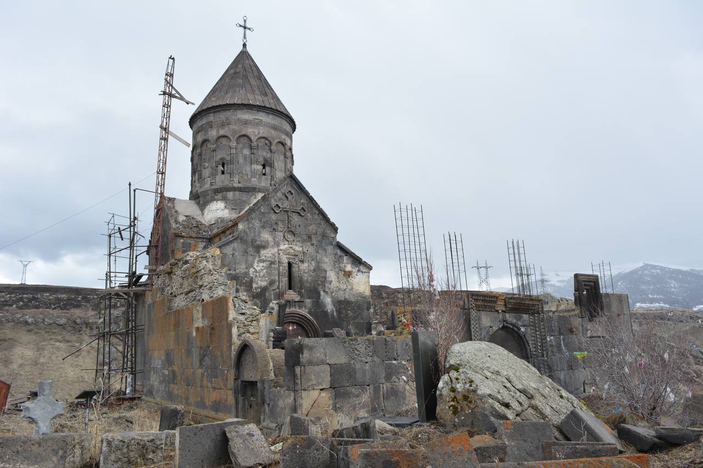
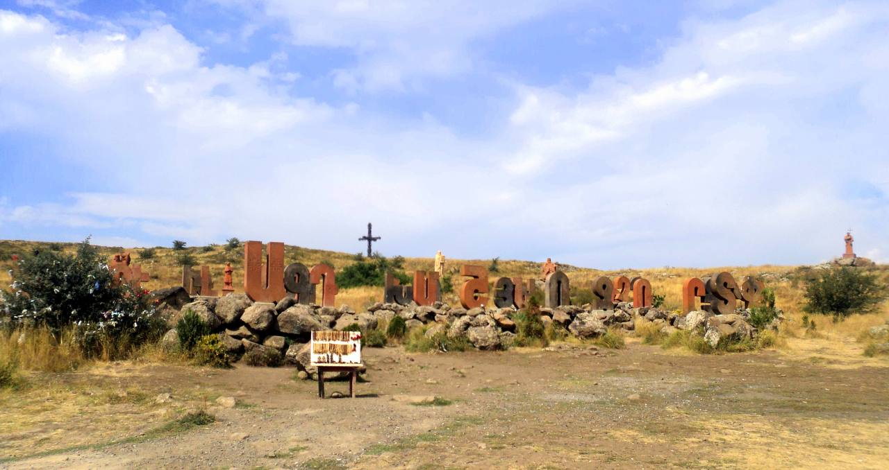
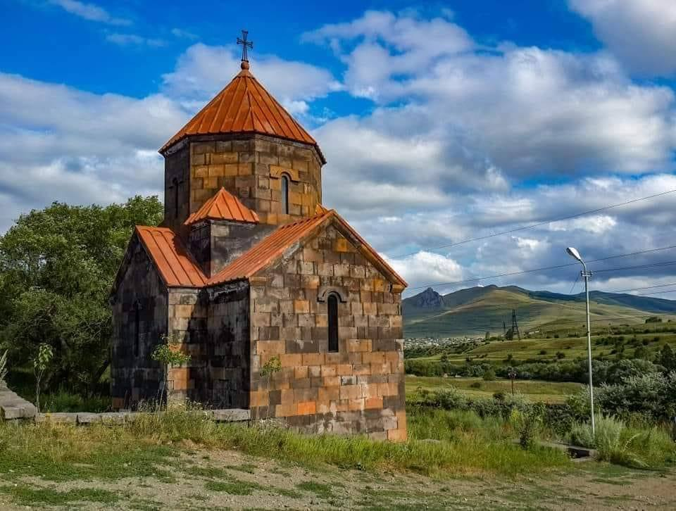
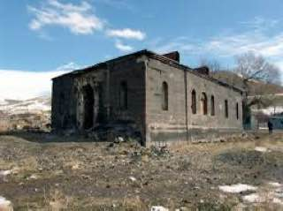

Արագած լեռան արևմտյան
լանջին, Արտաշավան գյուղում,
տեղակայված է հայկական
այբուբենի եզակի հուշարձան:
Քանդակագործական այս շքեղ
աշխատանքը գտնվում է անմիջապես
բաց երկնքի տակ և ներառում է
39 տառերի զարդաքանդակներ։
Համալիրի բոլոր տարրերը
քանդակվել են տուֆից:
Հայոց գրերը ստեղծել է
Մեսրոպ Մաշտոցը 405 թ։
Համալիրը կառուցվել է
2005 թվականին՝ հայոց
գրերի ստեղծման 1600-
ամյակի առթիվ։

Օլդ Դիլիջան
Անցյալ դարաշրջանի
ոճով և ճարտարապետությամբ
կառուցված փողոցը հայտնի
է նաև Թուֆենկյան անունով:
Այստեղ մեծացած և ապրած
բնակիչներից մեկի թոռան
թոռը պատմում է, որ
տատից լսել է, թե
ինչքան հյուրասեր և
բարի մարդիկ են ժամանակին
ապրել այս փողոցի տնակներում:
Երևան
Երևանն աշխարհի հնագույն քաղաքներից է։ Հնագիտական պեղումներով պարզվել է, որ մարդն այստեղ բնակվել է տասնյակ հազարավոր տարիներ առաջ։ Քաղաքի տարածքում տարբեր ժամանակաշրջաններում առաջացել և զանազան պատճառներով կործանվել են բազմաթիվ բնակավայրեր։ Ժամանակագրական առումով՝ քաղաքի տարածքի հնագույն բնակավայրը Երևանյան կամ Հրազդան-1 քարայրն է (Երևանյան լճի մոտ՝ Հրազդան գետի ձախ ափին, ներկայումս ԱՄՆ դեսպանատան տարածքում), որի հնագույն՝ ստորին շերտը (4–5 մշակութային շերտ) թվագրվում է մուստերյան շրջանով (100–35 հազարամյակ առաջ)։ Ընդհանուր առմամբ Հրազդանի կիրճում քարայրների թիվը մոտ հարյուր է։ Որպես հին բնակավայր հայտնի է նաև Շենգավիթը. այստեղ մարդիկ բնակություն են հաստատել 5–6 հազար տարի առաջ։
Առաջարկ 2 ։ 200$
Արայի լեռ
Արայի լեռ հանգած հրաբուխը
գտնվում է Արագածի հարավ-
արևելքում՝ Քասաղ և
Հրազդան գետերի միջև:
Հվ-արմ.-ում կա
բնական պատռվածք:
Կազմված է նեոգենի հրաբխային
ապարներից:Ըստ ավանդության,
լեռը կոչվել է Արա Գեղեցիկ
արքայի անունով:Համաձայն
լեգենդի` Արայի լեռը դա
հենց Արա Գեղեցիկի մարմինն
է, որն ընկել էր ճակատամարտի
ժամանակ: Հեռվից այն իրոք
նմանվում է, ձեռքերը կրծքին
դրած, պառկած մարդու:

Պարզ լիճ
Պարզ լիճը աղբյուրներից
սկսվող, հոսք ունեցող
լիճ է։ Լճի ջուրը
թափանցիկ է, կանաչավուն
երանգով: Մոտակայքում
սաղարթապատ անտառի
հիասքանչ արտացոլանքը
զարդարում է լճի մակերևույթը:
Հաճելի կլիմայական պայմանների
շնորհիվ տուրիստական բարձր
սեզոնը Հայաստանում
բավականին երկար է տևում:
Երևան
Երևանն աշխարհի հնագույն քաղաքներից է։ Հնագիտական պեղումներով պարզվել է, որ մարդն այստեղ բնակվել է տասնյակ հազարավոր տարիներ առաջ։ Քաղաքի տարածքում տարբեր ժամանակաշրջաններում առաջացել և զանազան պատճառներով կործանվել են բազմաթիվ բնակավայրեր։ Ժամանակագրական առումով՝ քաղաքի տարածքի հնագույն բնակավայրը Երևանյան կամ Հրազդան-1 քարայրն է (Երևանյան լճի մոտ՝ Հրազդան գետի ձախ ափին, ներկայումս ԱՄՆ դեսպանատան տարածքում), որի հնագույն՝ ստորին շերտը (4–5 մշակութային շերտ) թվագրվում է մուստերյան շրջանով (100–35 հազարամյակ առաջ)։ Ընդհանուր առմամբ Հրազդանի կիրճում քարայրների թիվը մոտ հարյուր է։ Որպես հին բնակավայր հայտնի է նաև Շենգավիթը. այստեղ մարդիկ բնակություն են հաստատել 5–6 հազար տարի առաջ։
Առաջարկ 3 ։ 300$

Աստվածընկալի վանական համալիր
Աստվածընկալի վանական համալիրը գտնվում է Քասաղ գետի կիրճի աջ ափի իջվածքում, գետի աջակողմյան եռանկյունաձև, բարձր բլրի վրա։Աստվածընկալի անունն առաջացել է վանքում պահվող «Աստվածընկալ Սուրբ Խաչ»-ի անունից։

Հայոց գրերի հուշարձան
Արագած լեռան արևմտյան
լանջին, Արտաշավան գյուղում,
տեղակայված է հայկական
այբուբենի եզակի հուշարձան:
Քանդակագործական այս շքեղ
աշխատանքը գտնվում է անմիջապես
բաց երկնքի տակ և ներառում է
39 տառերի զարդաքանդակներ։
Համալիրի բոլոր տարրերը
քանդակվել են տուֆից:
Հայոց գրերը ստեղծել է
Մեսրոպ Մաշտոցը 405 թ։
Համալիրը կառուցվել է
2005 թվականին՝ հայոց
գրերի ստեղծման 1600-
ամյակի առթիվ։
Երևան
Երևանն աշխարհի հնագույն քաղաքներից է։ Հնագիտական պեղումներով պարզվել է, որ մարդն այստեղ բնակվել է տասնյակ հազարավոր տարիներ առաջ։ Քաղաքի տարածքում տարբեր ժամանակաշրջաններում առաջացել և զանազան պատճառներով կործանվել են բազմաթիվ բնակավայրեր։ Ժամանակագրական առումով՝ քաղաքի տարածքի հնագույն բնակավայրը Երևանյան կամ Հրազդան-1 քարայրն է (Երևանյան լճի մոտ՝ Հրազդան գետի ձախ ափին, ներկայումս ԱՄՆ դեսպանատան տարածքում), որի հնագույն՝ ստորին շերտը (4–5 մշակութային շերտ) թվագրվում է մուստերյան շրջանով (100–35 հազարամյակ առաջ)։ Ընդհանուր առմամբ Հրազդանի կիրճում քարայրների թիվը մոտ հարյուր է։ Որպես հին բնակավայր հայտնի է նաև Շենգավիթը. այստեղ մարդիկ բնակություն են հաստատել 5–6 հազար տարի առաջ։
Առաջարկ 1 ։ 400$

Չիչխանավանք
Չիչխանավանքը գտնվում է
Լոռու մարզում։ Եկեղեցու ստույգ
անունը հայտնի չէ և Չիչխանավանք
է կոչվում ժողովրդի լեզվով:
Եկեղեցու մասին պատմագրական
տեղեկություններ գրեթե չեն պահպանվել:
Լինելով բլրի ստորոտում` եկեղեցին
գրեթե հիմնովին ավերվել է 1926թ
Գյումրու երկրաշարժից:
Սուրբ Հովհաննես մատուռ
2157 մետր բարձրության վրա գտնվող Ղալթախչիի Սուրբ Հովհաննես մատուռի մասին պտտվող լեգենդներն ու պատմվող պատմություններն օր օրի ավելանում ու ձնագնդիկի էֆեկտով մեծանում են: Սրբի հրաշագործ ուժի, իրականացված նպատակների, բուժված հիվանդների ու հղիացած կանանց մասին պատմությունները շատ են: Մարդկանց հոսքը մատուռ չի դադարում
Գյումրի
Բնակավայրի անունն ի սկզբանե եղել է Կումայրի, հետագայում՝ մինչև 1840 թվականը՝ Գյումրի։ Ռուսական կայսրության տիրապետության ժամանակաշրջանում՝ 1840-1924 թվականներին, այն վերանվանվել է Ալեքսանդրապոլ։ Խորհրդային Միության ժամանակաշրջանում՝ 1924-1990 թվականներին, քաղաքը վերանվանվել է Լենինական։ 1990-1992 թվականներին կրկին ստացել է հին անունը՝ Կումայրի, այնուհետև վերանվանվել Գյումրի։
Առաջարկ 2 ։ 350$
Մինաս Ավետիսյանի թանգարան
Մինաս Ավետիսյանի թանգարանը հիմնադրվել է 1982 թվականին՝ նկարչի ծննդավայր Ջաջուռ գյուղում: 1988 թ. երկրաշարժից շենքն ավերվել է: Թանգարանը վերաբացվել է 2003 թ.

Ջաջուռի վանք
Ջաջուռ գյուղը հիմնադրվելէ
1828-29 թթ.: 1910-11 թթ.
Արդար Մանուկը, մեծանուն
նկարիչ Մինաս Ավետիսյանի հոր՝
Կարապետի և այլ ջաջուռցիների
աջակցությամբ, կառուցում է
գյուղի միանավ եկեղեցին՝
քառանկյուն հատակագծով:
Թաղածածկ տանիքը ժամանակի
ընթացքում քանդվել է և
փոխարինվել փայտյա տանիքով:
Միակ մուտքն արևմտյան կողմից
է: Ունեցել է զանգակատուն,
որը 1988 թ. ահեղ երկրաշարժից
քանդվել է:
Գյումրի
Բնակավայրի անունն ի սկզբանե եղել է Կումայրի, հետագայում՝ մինչև 1840 թվականը՝ Գյումրի։ Ռուսական կայսրության տիրապետության ժամանակաշրջանում՝ 1840-1924 թվականներին, այն վերանվանվել է Ալեքսանդրապոլ։ Խորհրդային Միության ժամանակաշրջանում՝ 1924-1990 թվականներին, քաղաքը վերանվանվել է Լենինական։ 1990-1992 թվականներին կրկին ստացել է հին անունը՝ Կումայրի, այնուհետև վերանվանվել Գյումրի։
Առաջարկ 3 ։ 350$
Ջարդի ձոր
Շիրակի մարզի Ջաջուռ
գյուղից 3 կմ հեռու Հերհերի
ձորն է։Այդ ձորը շատերին
հայտնի է «Ջարդի ձոր»
անվանումով: Սա ներկայիս
ՀՀ տարածքում միակ տեղն է,
որտեղ թուրքերի կողմից
իրականացվել են հայերի
զանգվածային ջարդեր:
Մինչև հիմա այդտեղ
հողը փորելիս կարելի է
հանդիպել մարդկային
ոսկորների և կմախքների:
Հերհերի ձորը յուրօրինակ
հուշարձան է, որը կենդանի
վկայությամբ խորհրդանշում
է 20-րդ դարի սկզբին
Հայոց ցեղասպանության փաստը:
Սուրբ Խաչ
Մեծ Սարիարում կա
Սուրբ Նշան (Սուրբ Խաչ)
եկեղեցի (1907 թ.)։
Գյուղում կա նաև «Գրիգոր
Ավետարան» անունով մատուռ։
Գյումրի
Բնակավայրի անունն ի սկզբանե եղել է Կումայրի, հետագայում՝ մինչև 1840 թվականը՝ Գյումրի։ Ռուսական կայսրության տիրապետության ժամանակաշրջանում՝ 1840-1924 թվականներին, այն վերանվանվել է Ալեքսանդրապոլ։ Խորհրդային Միության ժամանակաշրջանում՝ 1924-1990 թվականներին, քաղաքը վերանվանվել է Լենինական։ 1990-1992 թվականներին կրկին ստացել է հին անունը՝ Կումայրի, այնուհետև վերանվանվել Գյումրի։